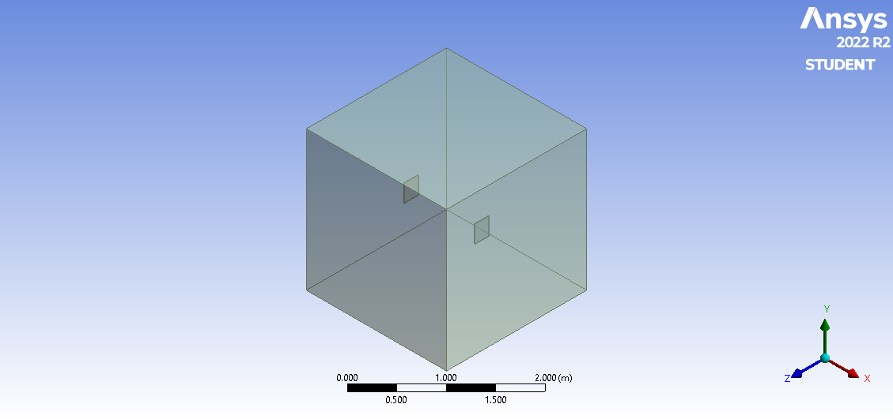
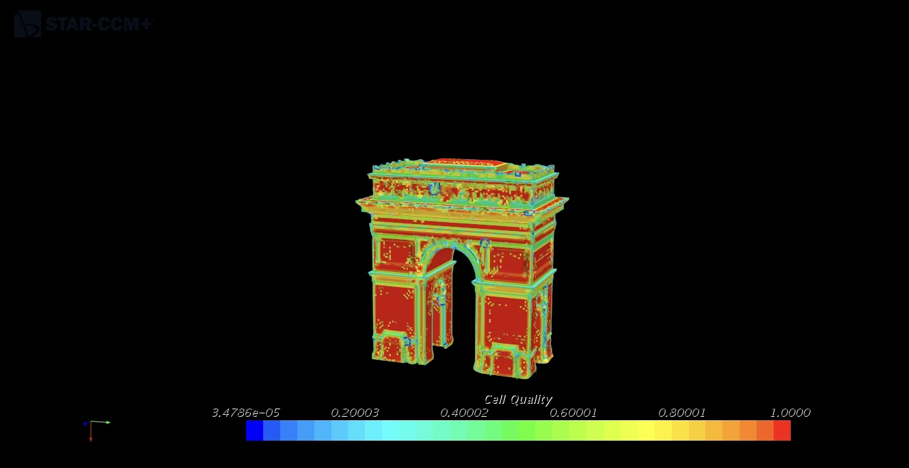
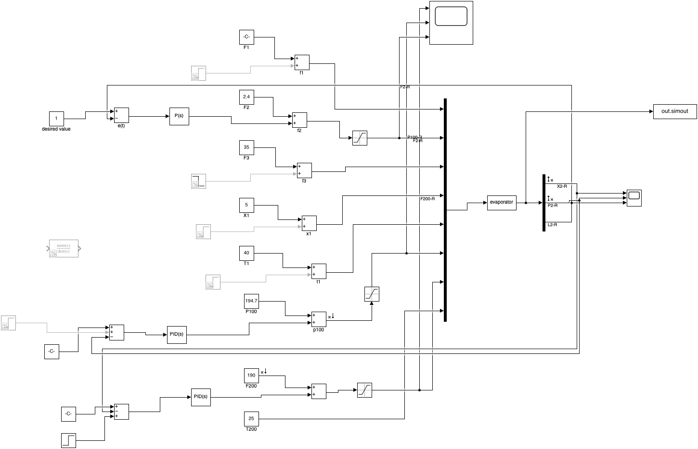
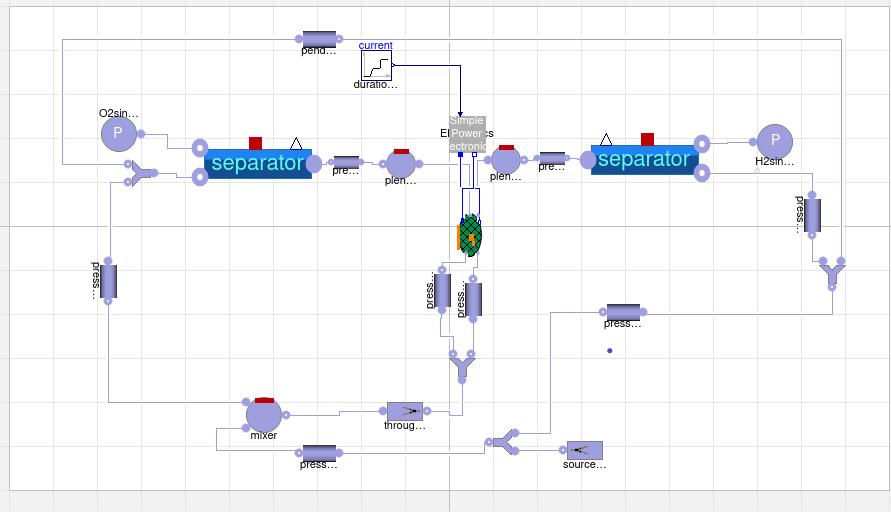

Open to opportunities
● Available for New Roles

M.Sc. Chemical &
Energy
Engineer
Hi I Am
Sasi Kanth Vadde
Electrochemical Systems · Dynamic Simulation · Alkaline Water Electrolysis
Open to opportunities
● Available for New Roles
M.Sc. Chemical &
Energy
Engineer
Electrochemical Systems · Dynamic Simulation · Alkaline Water Electrolysis
About Me
I'm a research engineer based in Stuttgart, Germany — specialising in physics-based dynamic modelling of alkaline water electrolyzers. With two years at the Deutsches Zentrum für Luft- und Raumfahrt (DLR), I translate detailed cell-level physics into reduced-order models compatible with dynamic plant simulation, validated against real experimental data.
Core Competencies
Languages
Work Experience
Deutsches Zentrum für Luft- und Raumfahrt (DLR) · Stuttgart, Germany
September 2023 – December 2025
Otto von Guericke University · Magdeburg, Germany
June 2023 – August 2023
Next Opportunity
2026 →
Open to research, engineering, or simulation roles in green hydrogen & energy systems.
Research Projects
Get In Touch ↗
Numerical Simulation
Simulated natural convection around rectangular heating elements using buoyantPimpleFoam. Included mesh sensitivity analysis and characterised thermal performance across laminar flow regimes.

Aerodynamic Simulation
Simulated airflow around the Arc de Triomphe using computational fluid dynamics to evaluate flow behaviour and aerodynamic forces on a complex architectural structure.

Process Control
Designed and tuned PID controllers in MATLAB/Simulink using Ziegler–Nichols, Cohen–Coon, and IMC methods. Evaluated performance via step response metrics and integral error criteria.

Master's Thesis
Developed and validated a transient 1D single-cell alkaline water electrolyzer model in Dymola/Modelica for two-phase electrolyte validation — the centrepiece of two years at DLR.
Education
Otto von Guericke University
Magdeburg, Germany
Focus areas: Computational Fluid Dynamics (CFD), Process Control & Systems Engineering, Machine Learning in Chemical Engineering, Multiphase Flows, Advanced Heat & Mass Transfer.
Thesis: Transient Modelling of an Alkaline Electrolyzer for validating a Two-Phase Electrolyte Model
GMR Institute of Technology
Rajam, India
Focus areas: Thermodynamics & Heat Transfer, Fluid Mechanics & Hydraulic Machines, Finite Element Methods, Power Plant Engineering & Energy Systems.
Based in Stuttgart — open to research, engineering, and simulation roles in green hydrogen, electrochemical systems, and energy technologies.